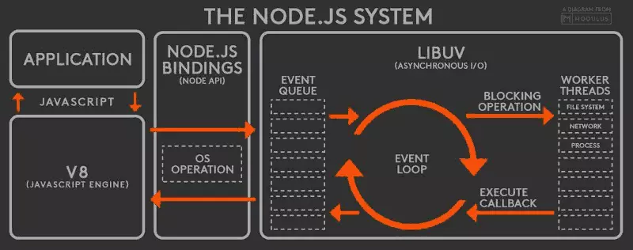
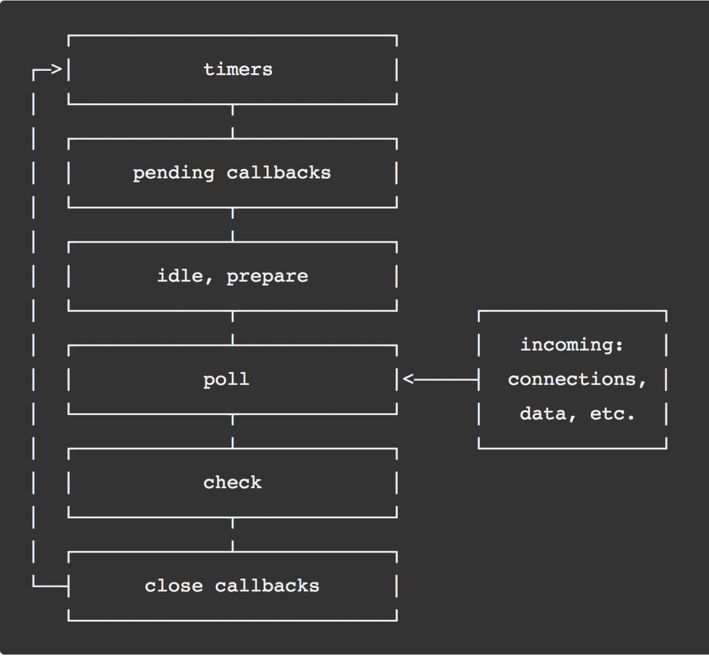
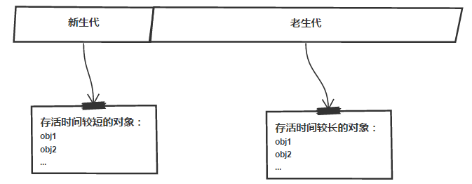
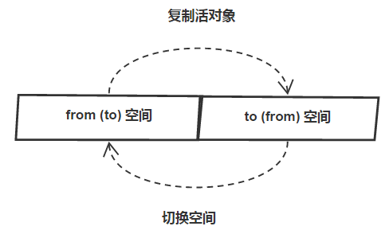
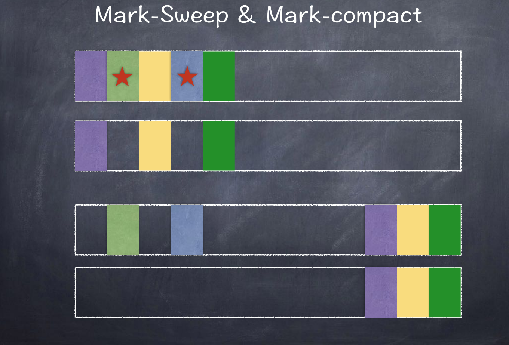

Node

Node.js 是一个能够在服务器端运行 JavaScript 的开放源代码、跨平台 JavaScript 运行环境。Node.js 由 Node.js 基金会持有和维护，并与 Linux 基金会有合作关系。Node.js 采用 Google 开发的 V8 运行代码，使用事件驱动、非阻塞和异步输入输出模型等技术来提高性能，可优化应用程序的传输量和规模。这些技术通常用于数据密集的即时应用程序。
!> node 主要由 v8、I/O 模型(libuv)、 eventLoop (libuv),node bingdins(http,file,soket,system,etc)
fs
文件系统
fs.readFile //读取文件夹异步读取
fs.readFileSync(path[, options]) //同步读取
fs.writeFile //写入文件
fs.writeFileSync(file, data[, options])
fs.appendFile //追加文件
fs.mkdirSync('a') // 同步创建文件 要求父目录必须存在
fs.readdir(path[, options], callback) //读取目录下所有的文件
fs.stat(path, callback）//查看文件目录信息
stat.isDirectory() //判断是否是文件夹
stat.isFile() //判断是否是文件
fs.rename(oldPath, newPath, callback) // 移动文件或目录
fs.unlink(path, callback)// 删除文件
fs.unlinkSync(path, callback)// 删除文件 同步
fs.rmdir(path, callback) //删除文件夹
fs.rmdirSync(path, callback) //删除文件夹 同步
fs.accessSync('a') //查找文件是否存在
fs.ftruncate(fd[, len], callback)//截断文件
path
路径
__filename。全局值，当前文件绝对路径
__dirname。全局值，当前文件夹绝对路径。等效于path.resolve(__filename, '..')
path.join([...paths])。相当于把所传入的任意多的参数 按照顺序 进行命令行般的推进
path.resolve([...paths])。以当前文件的路径为起点，返回绝对路径。可以理解为每次都是新建cd命令
path.dirname(path)。返回指定路径所在文件夹的路径
path.basename(path)。返回指定Path路径所在文件的名字
path.extname(path)。获取指定字符串或者文件路径名字的后缀名，带.比如.txt
path.isAbsolute(path) 是否是绝对路径,返回boolean值
util
实用工具
promisify //promise
util.inherits(constructor, superConstructor) 是一个实现对象间原型继承的函数。
util.inspect(object,[showHidden],[depth],[colors]) 是一个将任意对象转换为字符串的方法，通常用于调试和错误输出。它至少接受一个参数 object，即要转换的对象
util.isArray(object) 如果给定的参数 "object" 是一个数组返回true，否则返回false。
util.isRegExp(object) 如果给定的参数 "object" 是一个正则表达式返回true，否则返回false。
util.isDate(object) 如果给定的参数 "object" 是一个日期返回true，否则返回false
util.isError(object) 如果给定的参数 "object" 是一个错误对象返回true，否则返回false。
event
- 事件触发器
addListener:为指定事件添加一个监听器到监听器数组的尾部。
on: 为指定事件注册一个监听器，接受一个字符串 event 和一个回调函数
off
emmit:按监听器的顺序执行执行每个监听器，如果事件有注册监听返回 true，否则返回 false
once:为指定事件注册一个单次监听器，即 监听器最多只会触发一次，触发后立刻解除该监听器。
removeListener:移除指定事件的某个监听器，监听器必须是该事件已经注册过的监听器
newListener
os
- 操作系统
os.tmpdir()返回操作系统的默认临时文件夹
os.hostname() 返回操作系统的主机名。
os.type()返回操作系统名
os.release() 返回操作系统的发行版本。
os.cpus()返回一个对象数组，包含所安装的每个 CPU/内核的信息：型号、速度（单位 MHz）、时间（一个包含 user、nice、sys、idle 和 irq 所使用 CPU/内核毫秒数的对象）
os.networkInterfaces() 获得网络接口列表
os.homedir() 方法以字符串的形式返回当前用户的主目录
?> IO 密集型：大量的输入输出; CUP 密集型 :大量的计算；
守护进程
在开发 nodejs 应用时遇到过这样的情况，修改 node 应用中的程序文件后,必须重启 node 才能重新加载应用代码。node 加载过一次文件后就将其缓存在内存中，以后再读取这个文件是从内存中读取，导致后面再修改此文件都不会加载了。这样的设计提高了性能，但降低了开发效率。
常见的进程守护工具
npm install -g nodemon
npm install -g supervisor
npm install forever -g
IO 常见的操作
TCP / UDP，标准输入输出，文件读写，DNS，管道（进程通信）
IO 模型
同步和异步，阻塞和非阻塞，每个 I/O 都有它适合的场景
同步阻塞 ：读写 ，问题，就是无法并发地执行 I/O 操作或者在 I/O 操作执行的同时执行 CPU 的计算
同步非阻塞： 读写，如 while 循环轮询等待执行的操作，会造成不必要的 CPU 运算的浪费，因为此时 I/O 操作未完成，read 函数拿不到结果；如果使用 sleep/usleep 的方式强行让进程睡眠一段时间，又回造成 I/O 操作的返回不及。
异步阻塞：设备以非阻塞方式打开，然后应用程序阻塞在 select 系统调用中，用它来监听可用的 I/O 操作，select 系统调用最大的好处是可以监听多个描述符，而且可以指定每个描述符要监听的事件：可读事件、可写事件和发生错误事件，select 系统调用的主要问题是效率不高
异步非阻塞：异步非阻塞 I/O 模型的读请求会立即返回，表明读操作成功启动。然后应用程序就可以在读操作完成之前做其他的事情。当读操作完成时，内核可以通过信号或者基于线程的回调函数来通知应用程序读取数据。单个进程可以并行执行多个 IO 请求是因为 CPU 的处理速度要远大于 I/O 的处理速度。 当一个或多个 I/O 请求在等待处理时，CPU 可以处理其他任务或者处理其他已完成的 I/O 请求。
select： 模型的关键是使用一种有序的方式，对多个套接字进行统一管 理与调度：缺点：单个进程能够监视的文件描述符的数量存在最大限制通常是 1024，当然可以更改数量，但由于 select 采用轮询的方式扫描文件描述符，文件描述符数量越多，性能越差；内核/用户空间内存拷贝问题，select 需要复制大量的句柄数据结构，产生巨大的开销； epoll：支持一个进程打开大数目的 socket 描述符，IO 效率不随 FD 数目增加而线性下降，使用 mmap 加速内核与用户空间的消息传递； iocp
libuv:使用异步，事件驱动的编程方式，核心是提供 i/o 的事件循 环和异步回调(libuv 使用 epoll 来构建 event-loop 的主体) libuv 的 API 包含有时间，非阻塞的网络，异步文件操作，子进程 等等。
事件循环
事件循环是 Node.js 处理非阻塞 I/O 操作的机制——尽管 JavaScript 是单线程处理的——当有可能的时候，它们会把操作转移到系统内核中去。

- V8 引擎解析 JavaScript 脚本。
- 解析后的代码，调用 Node API。
- libuv 库负责 Node API 的执行。它将不同的任务分配给不同的线程，形成一个 Event Loop（事件循环），以异步的方式将任务的执行结果返回给 V8 引擎。
- V8 引擎再将结果返回给用户。
libuv
Node 中的 Event Loop 和浏览器中的是完全不相同的东西。Node.js 采用 V8 作为 js 的解析引擎，而 I/O 处理方面使用了自己设计的 libuv，libuv 是一个基于事件驱动的跨平台抽象层，封装了不同操作系统一些底层特性，对外提供统一的 API，事件循环机制也是它里面的实现
!> liunx 轮循通知 custom threadpool 、 windows 事件通知 IOCP

Node 事件循环分成了 6 个不同的阶段，其中每个阶段都维护着一个回调函数的队列，在不同的“阶段”（我们使用阶段来描述事件循环，它并没有任何特别之处，本质上就是不同方法的顺序调用），事件循环会处理不同类型的事件，日常开发中的绝大部分异步任务都是在这 timers、poll、check 个阶段处理
- Timers：用来处理 setTimeOut()和 setInterval()的回调。
- pending callbacks（I/O callbacks）：大多数的回调方法在这个阶段执行，除了 timers、close 和 setImmediate 事件的回调函数。
- idle，prepare：仅仅在内部使用，我们不管它。
- poll：轮询，不断检查有没有新的 I/O 事件，事件环可能会在这里阻塞。
- check：处理 setImmediate()事件的回调。
- close：处理一些 close 相关的事件，例如 socket.on('close',...)等。
setTimeout(()=>{
console.log('timer1')
Promise.resolve().then(function() {
console.log('promise1')
})
}, 0)
setTimeout(()=>{
console.log('timer2')
Promise.resolve().then(function() {
console.log('promise2')
})
}, 0)
浏览器输出：
time1
promise1
time2
promise2
Node输出：
time1
time2
promise1
promise2
- V8 引擎解析 JavaScript 脚本。
- 解析后的代码，调用 Node API。
- libuv 库负责 Node API 的执行。它将不同的任务分配给不同的线程，形成一个 Event Loop（事件循环），以异步的方式将任务的执行结果返回给 V8 引擎。
- V8 引擎再将结果返回给用户。
控制异步手段
- 原始 jquery 时代：deferred, Q.js, Wind, Bigpipe, bluebird
- 然后 es6 的时代：generator yield next 和 promise then
- 然后 es7 的时代：async await
node 内存管理
V8 的垃圾回收策略主要基于分代式垃圾回收机制。在自动垃圾回收的演变过裎中,人们发现没有一种垃圾回收算法能够胜任所有场景。V8 中内存分为新生代和老主代两代。新生代为存话时间较短对象,老主代中为存活时间较长的对象。

?> node 使用 javascript 在服务端操作大内存对象收到了一定的限制 新生代 64 位系统是 From、To 各占 16MB， 16MB x 2 ;32 位系统是 From、To 各占 8MB，8MB x 2 老生代 64 位系统是 1.4G ;32 位系统是 0.7G
!>在 node 启动时，通过--max-new-space-size 和--max-old-space-size 可分别设置新生代和老生代的默认内存限制
垃圾回收 GC 包括三个主要步骤
- 枚举根节点的引用
- 发现并标记活对象
- 垃圾内存清理
Scavenge

scavenge：当分配指针达到了新生区的末尾，就会有一次清理 这个算法的大概意思是：新生区被分为两个等大的区（from 和 to），绝大多数内存的分配都会出现在 from 区（但是某些可执行的代码对象是分配在老生区的），当 from 区耗尽时，我们交换 from 和 to，然后将 from 区中活跃的对象复制到 to 区或者晋升到老生区中，其中标记的过程时深度优先搜索！
新生代被回收过多次 ，发现 to 的使用空间超过 25%晋升到老生代
缺点：scavenge 算法对于快速回收和紧缩内存效果很好，但是对于大片内存则消耗过大，频繁的拷贝对于 cpu 是不可承受之重，老生区包含有上百 M 的数据，对于这种区域我们采用标记-清除，标记-压缩算法
清除算法 (Mark-Sweep) 压缩算法 (Mark-Compact)
V8 老生代主要采用 Mark-Sweep 和 Mark- Compact 在使用 Scavenge 不合适。一个是对象较多需要赋值量太大，而且还是改能解决间问题。Mark-Sweep 是标记清除,标记那些死亡的对象,然后清條。但是清除过后出现内存不连续的情况,所以我们要使用 Mark- Compact,它是基于 Mark-Sweep 演变而来的,他先将活着的对象移到一边,移动完成后,直接清理边界外的内存。当 CPU 空间不足的时候会非常的高效。V8 后续还引入了延迟处理,增量处理,并计划引入行标记处理。
?> 由于 Mark-Conpact 需要移动对象，所以它的执行速度不可能很快，在取舍上，V8 主要使用 Mark-Sweep，在空间不足以对从新生代中晋升过来的对象进行分配时，才使用 Mark-Compact

算法对比
| 回收算法 | Mark-Sweep | Mark-Compact | Scavenge |
|---|---|---|---|
| 速度 | 中等 | 最慢 | 最快 |
| 空间开销 | 少 | 少 | 双倍空间（无碎片） |
| 是否移动对象 | 否 | 是 | 是 |
node 常见的内存泄漏
- 无线增长的数组
- 无线设置属性和值
- 任何模块内的私有变量和方法均是永驻内存的
v8 调试常用参数
-trace-opt-verbose：跟踪代码执行细节 -trace-gc：跟踪 GC 执行细节 -allow-natives-syntax:允许 V8 本身语法 --print-ast：打印 AST --print-scopes :查看作用域 --print-bytecode：查看解析器生成的字节码 --trace-opt:查看那些代码被优化过 --trace-deopt:查看那些代码被反优化过
检测内存泄漏
- node-inspector
- Easy-Monitor
- alinode
- wrk
-
<!-- 沙箱：解决运行时冲突，虚拟机 （闭包）
SystemJS webpack5 single-spa omi -->